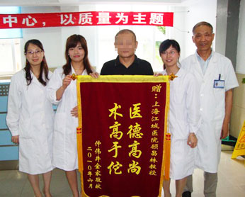
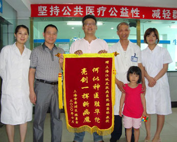
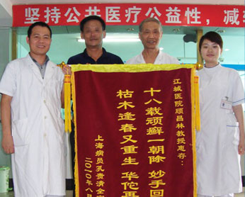
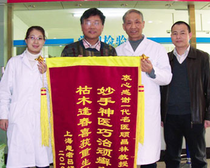
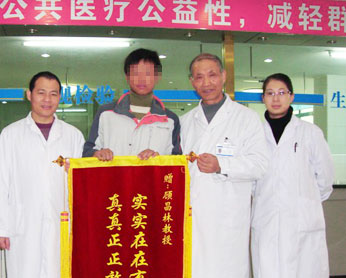
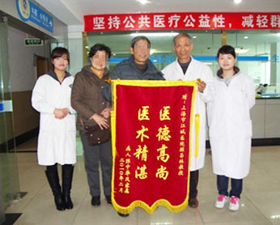

寻常型银屑病
- 对比图
- 病因
- 治疗
- 案例
- 专家
- 媒体报道
- 相关专题
- 患者点评
治疗对比图
Comparison chart of treatment
发病原因
Cause of disease
- 遗传因素
- 免疫因素
- 内分泌因素
- 精神因素
- 遗传因素
- 环境因素
-

遗传因素
引发原因：是遗传因素与环境因素等多种因素相互作用的多基因遗传病。一般认为有家族史者约占30%
是否传染：遗传性因素引起的牛皮癣不会传染
遗传性牛皮癣该怎么治疗?
-

免疫因素
引发原因：大量研究证明银屑病是免疫介导的炎症性皮肤病，其发病与炎症细胞浸润和炎症因子有关.
是否传染：免疫因素引起的牛皮癣不会传染
遗传性牛皮癣该怎么治疗?
-

内分泌因素
引发原因：妊娠可使皮损消失或减轻，也可使皮损加重。甲状腺疾病、糖尿病等内分泌疾病对该病的影响不明显。
是否传染：内分泌因素引起的牛皮癣不会传染
遗传性牛皮癣该怎么治疗?
-

精神因素
引发原因：患者可以出现神经精神改变，且这些改变可以加重已有皮损。
是否传染：精神因素引起的牛皮癣不会传染
遗传性牛皮癣该怎么治疗?
-

感染因素
引发原因：研究证实链球菌感染、金黄色葡萄球菌感染、真菌感染与银屑病的发病有关，病毒感染与银屑病发病是否相关尚未明确。
是否传染：感染因素引起的牛皮癣不会传染
遗传性牛皮癣该怎么治疗?
-

生活习惯、药物因素、环境因素
引发原因：研究发现受潮、感染、饮酒、服药及精神紧张是诱发银屑病的主要危险因素。可能诱发或加重银屑病的药物有β1受体阻滞剂、非甾体抗炎药、锂盐、抗疟药、四环素、钙通道阻滞剂、二甲双胍、干扰素α等。环境因素与发病年龄有关，且季节、气候在银屑病的发病和复发方面有影响。
是否传染：生活环境因素引起的牛皮癣不会传染
遗传性牛皮癣该怎么治疗?
DFMZ308-中医生物活化疗法
DFMZ308- biological activation therapy of traditional Chinese Medicine
银屑病视频案例
Psoriasis screen case
-
广西4岁"穿山甲宝宝"千里求医记（初诊篇）
姓名：小绍一 年龄：4岁 发病史：3年 来自：广西
2014年6月1日上午，在上海江城皮肤病医院二楼诊疗区，一个满头黑色鳞甲的小男孩格外引人注意，他正坐在妈妈怀里候诊，旁边是他的爸爸。这个小男孩究竟得了什么病？病得严重吗？能治好吗？这个三口之家来自哪里？夫妻俩为儿子治病又有怎样的辛酸经历？六一儿童节到了，这个小男孩上海之行，会时来运转吗？（详细）
-
她感慨自己得知上海江城皮肤病医院太晚了
姓名：吴女士 年龄：45岁 发病史：22 年 来自：四川
"我结婚今年都已经22年了，结了婚以后就有的，我已经受了二十年了，它好在不传染……"二十年了，吴女士不知被牛皮癣折磨得吃了多少苦头，如今大病得愈，她感慨自己得知上海江城医院太晚了，她说："我早知道的话，十几年前我就到这里来，我早就好了！"
-
12天：从"行走靠挪"到"大步流星"的惊喜
姓名：阿郑 年龄：25岁 发病史：2 年 来自：浙江
"一停药马上就发出来，是药有问题。他在江湖郎中那里看了两个月不到，看了以后变成这个样子，越治越重，原来没有这么严重的。"在上海江城皮肤病医院UVB紫外光治疗室，说起了儿子的病情，阿郑的父亲对于当地"江湖郎中"的不当治疗，悔恨不已。
-
治疗牛皮癣滥用激素引起"妊娠纹"
姓名：陈女 年龄：22岁 发病史：5 年 来自：河南新乡
陈女士今年22岁，来自河南新乡，患牛皮癣五年，在当地及一些城市大医院治疗不愈，于2010年5月改投上海江城皮肤病医院，经顾昌林 教授用中医活血化瘀、清热解毒治疗牛皮癣专方治疗，仅用一个多月即皮损全部消退，至今效果稳定，一直没有复发。
-
热心邻居介绍！老朱说："来对了！"
姓名：朱先生 年龄：56岁 发病史：10年 来自：江苏海门
这个老病号姓朱，家住江苏海门，今年56岁。他身患银屑病（俗称牛皮癣），已经有十多年了，"全身都有，脚上头上也都有。"这些年来，老朱大江南北多地求医，不但病没治好，还在治疗信心上"被泼了一头冷水"。老朱说："看了北京、南京，东北那个沈阳都看过的，看不好啊，那的医生讲，你这个病看不好的，没用！"
-
十八年顽癣，枯木逢春
姓名：孔先生 年龄：45 岁 发病史：18年 来自：上海青浦
孔先生在上海一机关执业，事业有成，家庭幸福，惟有一件事美中不足----他患有顽固牛皮癣达十八年之久。十八年来，他不能到游泳池、不能到浴室，惟恐一脱衣服满身的皮损会吓着旁人，用他自己的话说是百般痛苦难以言表。
-
陈先生半信半疑地前来"试一试"
姓名：陈先生 年龄：32 岁 发病史：5年 来自：上海浦东
陈先生得牛皮癣五年半，其中几次治好，又几次复发。最后一次是半年前，复发得特别厉害，全身红肿，卧床不起，丧失了行走能力，本人也丧失了治疗的信心。
DFMZ308-中医生物活化疗法研究团队
DFMZ308- Chinese biological activation therapy team
-
顾昌林主任医师
国务院特殊津贴获得者
国家科技进步奖获得者
上海江城皮肤病医院主任及学术带头人
DFMZ-中医生物活化疗法创始人
擅长领域:
从事皮肤病临床医疗、科研工作40余年,擅长运用中西医结合治疗各种皮肤病疑难杂症,在攻克皮肤病世界难题--银屑病,他破除西医治疗牛皮癣依赖激素和抗癌药的弊端,努力开发祖国医学传统,试验出13种天然中草药的配方,研发"DFMZ308-牛皮癣中医活化疗法",在2002年全国科技大会上获"国家科技成果二等奖".获得了很多患者的一致认可与称赞。
-
陶家喜副主任医师
曾多次被评为军队优秀医务工作者
荣获三等功2次
军队科技进步二等奖2项
军队科技进步三等奖5项
擅长领域:
从事皮肤科临床诊疗工作已逾30年，尤其在军队三甲综合大医院"高标准、严要求"下的历练，在理论修养与临床诊疗上，均有独到研究与见解。擅长治疗各种类型银屑病（牛皮癣），对鱼鳞病、湿疹、荨麻疹等其他顽固性皮肤病也有丰富诊治经验。医德高尚，妙手回春，赢得了国内外广大患者的信赖与好评。
-
罗兰珍特聘专家
上海江城皮肤病医院专家组成员
拥有丰富的临床诊疗经验
擅长中西医结合治疗银屑病
擅长领域:
毕业于福建中医学院（现福建中医药大学），曾在福建省人民医院、福建省厦门市中医院（均为三甲医院）皮肤科进修深造，拥有丰富的临床诊疗经验。多次应邀参与银屑病、白癜风等中医皮肤科重点科研课题攻关，应邀参加全国大型皮肤病学术研讨会。注重中医理论与临床实践相结合，以中医内调外治为总则，达到标本兼治的效果，赢得广大患者的信任和好评。


媒体报道
Media reports
- 穿山甲宝宝
- 东方明珠成果展
- 东方明珠第二届成果展
- 世界银屑病日
- 腾讯网专访
-
怪病男孩全身麟 爱心救助得康复
银屑病不知道大家听说过没有，这个呢应该是医学上的学名，这要说牛皮癣大家就都知道了。牛皮癣啊，很顽固很痛苦，但这还算一般的，某些特殊的类型，就更严重了。最近啊，网上大家在转发一个穿山甲宝宝求医治病的事，小男孩呢叫荀绍一，为什么说穿山甲呢？身上像是黑色的鳞片。
-
据不完全估计，全世界约有1.25亿人受到银屑病的困扰，并且发病率以每年 5% 幅度增长，成为 10 年来发病率增速最快的疾病。这种疾病是一种严重的遗传疾病，虽然没有传染性，但对于该病的患者却造成了身心双重负担，成为严重威胁人们健康的疾病。
今年10月29日的"世界银屑病日"， 国际联合会银屑病协会，及各个支援团体进行的活动在世界各地举行，以提高人们对银屑病及其患者的正确认识，给予银屑病患者应有的重视和尊重。
-
新闻坊：第二届东方明珠皮肤病治疗成果展成功召开
医者仁心，为了帮助患有重症皮肤病的困难家庭，上海江城皮肤病医院联合杨浦和泰爱心服务社定向捐赠200万元善款成立爱心援助基金，减轻重症皮肤病患者的生活负担帮助这些患者完成治疗和康复，近日首批20万元援助经费已经交到杨浦和泰爱心服务社手中
-
以上海江城为代表的多家皮肤病专科医院意识到这一社会问题，首先面向全社会倡导拒绝歧视皮肤病人，并成立以顾昌林教授为带头人的专家组，专项研究、探索一 套完善的"皮肤病患者社会干预体系"。据相关负责人介绍，即日起将向全社会皮肤病患者开通社会干预热线400-699-1515，届时将有多家医疗、心理 咨询、慈善和公益志愿者机构联合为皮肤病患者提供医疗技术援助和社会帮助，在力求治愈生理疾病的同时，消除强加于他们身上的歧视和不公，帮助他们树立治疗 的信心和生活的勇气。
-
2010年10月15日，中国最大的中文门户网站--腾讯网，对上海江城皮肤病医院专家进行了采访。
多年来，上海江城皮肤病医院发扬创新精神，大力挖掘祖国医学成就，并充分利用现代科技成果，形成了独特特色的中西医结合治疗皮肤病的有效疗法，在皮肤科专业建设上，以一流的专业水平、一流的医德医风、一流的医疗服务，打造了品牌、形成了特色，其影响辐射力已遍及全国及海外，在社会上获得了众多荣誉和良好的口碑。
相关专题
Related topics
患者点评
Patients with comments
 特配独家中药药浴
特配独家中药药浴 中药药离子熏蒸
中药药离子熏蒸 308准分子激光
308准分子激光 311窄谱UVB治疗仪
311窄谱UVB治疗仪 蓝氧自体净血回输
蓝氧自体净血回输 穴位埋线抗体疗法
穴位埋线抗体疗法 抗感染疗法
抗感染疗法


 预约顾昌林医生
预约顾昌林医生